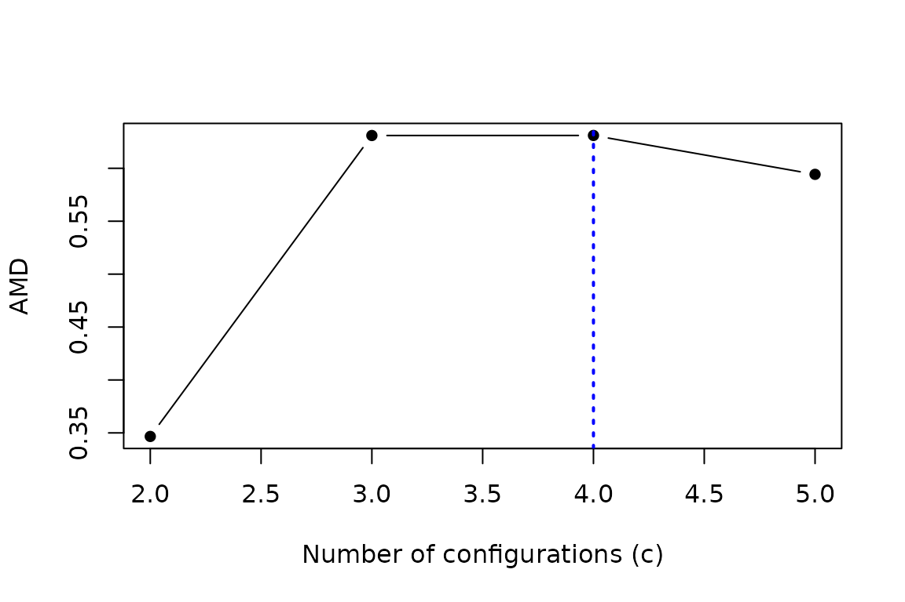

The computational core of Average Membership Degree
Source:vignettes/AMDconfigurations.Rmd
AMDconfigurations.RmdScope
Average Membership Degree (AMD) is a summary of a soft-membership matrix. It is not a clustering algorithm. The package currently uses fuzzy c-means to estimate memberships when constructing an AMD curve, but this backend is conceptually separate from the definition of the index.
For a membership matrix with observations and columns,
Therefore . AMD is zero when every row is uniform and reaches its upper bound for crisp memberships. The formula also accepts , where AMD is zero, but operational curves compare alternative resolutions and begin at .
Constructing a curve
For each candidate
,
compute_amd_curve() runs several initialisations of the
current fuzzy c-means backend. Random starts are computational attempts
to estimate the same solution, not statistical replicates. The converged
fit with the smallest fuzzy c-means objective supplies the primary curve
point.
The following example contains three groups by construction.
set.seed(8301)
X <- rbind(
matrix(rnorm(90, mean = 0, sd = 0.7), ncol = 3),
matrix(rnorm(90, mean = 4, sd = 0.7), ncol = 3),
matrix(rnorm(90, mean = 8, sd = 0.7), ncol = 3)
)
candidate_c <- 2:5
starts <- 3L
seed_matrix <- outer(
seq_len(starts),
candidate_c,
function(start, c) 100000L + 1000L * c + start
)
colnames(seed_matrix) <- as.character(candidate_c)
amd_curve <- compute_amd_curve(
X,
its = starts,
nin = min(candidate_c),
nsp = max(candidate_c),
seeds = seed_matrix,
iter_max = 1000,
verbose = FALSE
)
data.frame(
c = candidate_c,
AMD = unname(amd_curve$curve),
converged_starts = colSums(amd_curve$converged)
)
#> c AMD converged_starts
#> 2 2 0.3466353 3
#> 3 3 0.6309742 3
#> 4 4 0.6310310 3
#> 5 5 0.5942833 3
abs(amd_curve$curve[["3"]] - amd_curve$curve[["4"]])
#> [1] 5.679318e-05
plot(amd_curve, open_device = FALSE)
Named seed matrices make the mapping from (start, c)
explicit. If a wider candidate range uses the same master matrix, all
common fits remain identical.
New curve objects carry schema_version = 2L. Saved
public 0.1.0 objects can still be printed, summarised and plotted from
their stored mean and max values. They emit a
warning because they do not contain objectives and fitted memberships
from which the current primary curve could be reconstructed.
This deliberately retained example also illustrates why the complete
curve is the primary object of interpretation. The data generator
contains three groups, yet the AMD values at c=3 and
c=4 are nearly tied and the numerical winner can be
c=4. The subsequent decline supports a well-defined
resolution around that short plateau, but the isolated arithmetic
maximum does not by itself distinguish three generating groups from a
four-part refinement. The known truth is used below to extract
c=3; it is not inferred by which.max().
Reading before assigning
c_peak and its compatibility alias c_opt
report the first numerical maximum of the evaluated primary curve. They
do not encode a complete scientific rule. In particular:
- a maximum at the right boundary has no observed post-peak behaviour;
- nearly equal adjacent values may represent a resolution plateau;
- exact ties are reported at the smaller
c; - an internal maximum should be considered with its subsequent decline, stability and the range examined.
The package therefore requires an explicit c when
extracting assignments. Here c=3 is used because it is
known from the synthetic generator, not because the API selected it
automatically.
chosen_c <- 3L
assignment <- assign_configurations(amd_curve, c = chosen_c)
identical(
assignment$membership,
amd_curve$selected_fits[[as.character(chosen_c)]]$membership
)
#> [1] TRUEDescribing stored partitions
The diagnostic interface reads the fits already stored in the curve. It does not refit them, construct sample distances or select a number of groups.
diagnostics <- diagnose_amd(amd_curve)
diagnostics$candidates[, c("c", "amd", "mean_winning_membership")]
#> c amd mean_winning_membership
#> 1 2 0.3466353 0.8466353
#> 2 3 0.6309742 0.9643075
#> 3 4 0.6310310 0.8810310
#> 4 5 0.5942833 0.7942833
diagnostics$transitions
#> from_c to_c c_step amd_change ari nmi from_fragmentation
#> 1 2 3 1 2.843389e-01 0.4365947 0.5302015 0.3333333
#> 2 3 4 1 5.679318e-05 0.8661654 0.9089745 0.1666667
#> 3 4 5 1 -3.674771e-02 0.8502425 0.9238963 0.1444444
#> to_fragmentation
#> 1 0.1555556
#> 2 0.0000000
#> 3 0.0000000The dictionary in diagnostics$dictionary defines each
summary. Membership entropy and top-two gaps describe membership
definition, not density or geometric compactness. Agreement between
adjacent partitions is not stability under sample resampling. The
default ambiguity gap is a descriptive convention, not a universal
cutoff. Diagnostics not measured are listed explicitly in
diagnostics$unavailable.
Optional model-assisted interpretation
Version 0.2.0 includes an optional reader. It uses five fitted random
forests in an external corrected-v2 bundle; no models are downloaded or
trained by the package. ranger and digest are
needed only for this workflow. Obtain the model file and its expected
SHA-256 from the same trusted release.
reader <- load_amd_predictor(bundle_path, sha256 = bundle_sha256)
result <- predict_amd(X, reader, seed = 123, verbose = FALSE)
plot(result)
result$proposed_k
result$reliabilityThe reader requires c=2:14, 20 principal starts,
m=2, iter_max=2000, and no scaling or variable
selection. A curve already computed with those settings can be passed as
curve; the shorter illustrative curve above cannot. There
are also five computational refits per c for the frozen descriptors,
even when the main curve is reused. These refits do not resample
observations.
The proposed K targets the numerically resolved density-mode count
used as the simulation reference, not necessarily the number of
generating components. AMD itself does not estimate a density. The
proposal is separate from the numerical AMD maximum and does not
establish the true number of configurations. Off-grid proposals
themselves are labelled exploratory. Assignments still require the
user’s explicit c. Reliability estimates correctness of the
emitted one/several-modes decision and correctness of the exact proposed
K, separately; it is not directly the probability that groups exist.
The corrected forests’ historical calibrators were reassessed on the
previously examined final simulation bank, not in a new prospective
validation. Reliability is suppressed by default unless N is 150 or 600,
D is 2, 6 or 15, the output is within the observed support K=1:8 and no
unassessed missingness occurs. Matching N and D does not certify
new-data geometry; do not subsample or pad data merely to obtain a
reported certainty. allow_extrapolation=TRUE can expose
unvalidated numerical values away from the grid, but cannot validate
them.
The frozen models omitted value columns for the zero-variance
fraction (always zero) and minimum covariance-rank fraction (always
one). Departures suppress certainty even on the grid and cannot be
overridden with allow_extrapolation.
The descriptors include quadratic distance and covariance operations. A working-memory risk guard runs before new fits; it excludes the loaded forests and is neither a guaranteed total-memory bound nor a runtime limit. Partition distances use all observations; global distance summaries use a seeded sample of 2000 rows when N > 2000, as required by the frozen feature definition. The actual count and exact/subsampled flags are recorded. No additional approximation bypasses the guard. The manual workflow and stored-partition diagnostics remain usable without these operations.
Reproducibility record
The curve stores seeds, objectives, convergence, transformations, retained variables and the map of complete and omitted rows. It also links to a process-level software manifest.
manifest <- amd_reproducibility_manifest()
identical(amd_curve$manifest_id, manifest$manifest_id)
#> [1] TRUE
manifest[c("r_version", "amdconfigurations_version", "e1071_version", "rng_kind")]
#> $r_version
#> [1] "R version 4.6.1 (2026-06-24)"
#>
#> $amdconfigurations_version
#> [1] "0.2.0"
#>
#> $e1071_version
#> [1] "1.7.17"
#>
#> $rng_kind
#> [1] "Mersenne-Twister" "Inversion" "Rejection"In a production analysis, retrieve the manifest immediately after
every curve and save one copy of each distinct manifest_id.
Curves sharing an identifier can share that copy. Each parallel worker,
and each different RNGkind() used within a worker, receives
its own identifier.
Current limits
The mean and max components are preserved
for compatibility with earlier versions. They summarise all starts,
including nonconverged starts, and are not the primary curve or a basis
for scientific selection.
The package does not claim that AMD height, peak sharpness or curve prominence measures compactness, separation or definition in a universal sense.